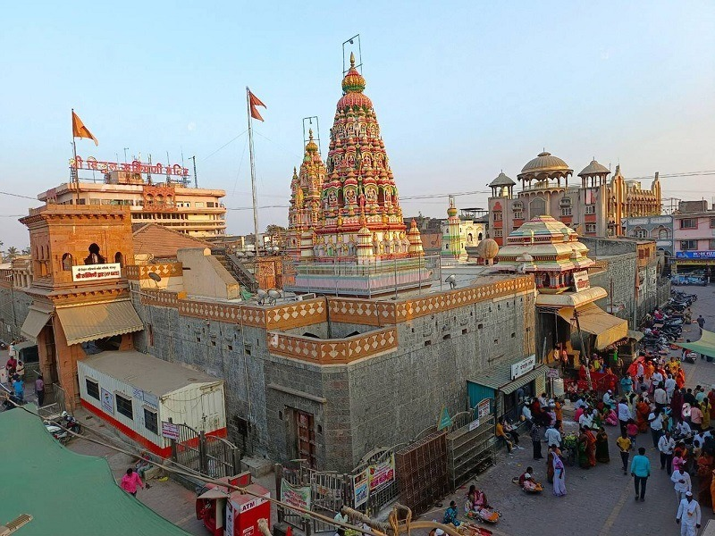
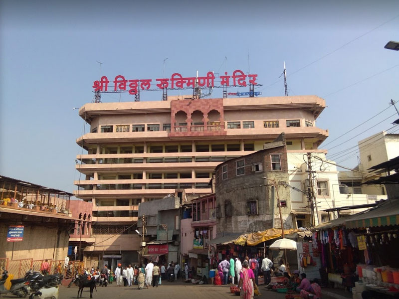
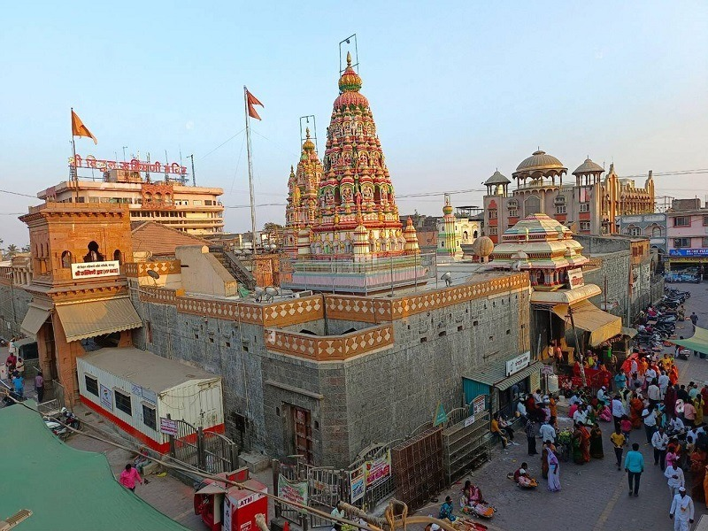
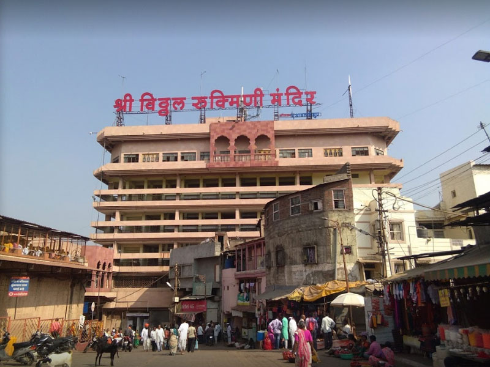

Welcome to Pandharpur
Pandharpur is a holy city located in the Solapur district of Maharashtra, India. It is renowned for its rich cultural heritage and religious significance, particularly as a major pilgrimage site for devotees of Lord Vithoba (a form of Lord Krishna). The city is famous for the Vitthal Rukmini Temple, which attracts millions of pilgrims every year, especially during the Ashadhi Ekadashi and Kartiki Ekadashi festivals. The temple's unique architecture and spiritual ambiance make it a must-visit destination for those seeking divine blessings. Pandharpur is also known for its vibrant traditions, folk music, and dance forms like Bhajan and Kirtan, which are integral to the city's cultural fabric. The annual Wari pilgrimage, where devotees walk long distances to reach the temple, is a testament to the deep faith and devotion of the people. In addition to its religious significance, Pandharpur offers a glimpse into rural life in Maharashtra, with its bustling markets, local cuisine, and warm hospitality. Visitors can explore nearby attractions such as the Chandrabhaga River and various other temples in the vicinity. Overall, Pandharpur is a city that beautifully blends spirituality, culture, and tradition, making it a unique and enriching experience for all who visit.

 


